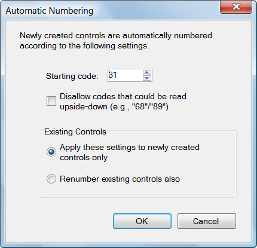

Event/Automatic Numbering...
Sets how Purple Pen automatically numbers control codes. Optionally, renumbers the codes of all existing controls.

Purple Pen automatically numbers newly created controls according the settings in this dialog.
Starting code. This is the first code that is used. To meet IOF guidelines, this should be 31 or greater.
Disallow codes that could be read upside-down. If this box is checked, control codes that read as a different control code upside-down are skipped. Example codes that would be skipped are 66, 89, 108, 119. Check this box if control codes could possibly be misread by competitors.
Apply these settings to newly created controls only. If this option is selected, the codes of existing controls are not changed. Any newly created control will receive a unique control code chosed according to the previous options.
Renumber existing controls also. If this option is selected, all the existing controls will receive new control codes, consecutively numbers according to the previous options. Newly created controls will also receive a unique control code chosed according to the previous options.
Regardless of the settings in this dialog, you can always change controls to have any desired code (including letters) by using the Controls/Change Codes command.